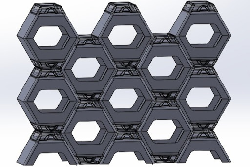

Plastic Injection Mold
Project in collaboration with PSI plastics.

Challenge
The project required designing a self‑watering flower pot that could be manufactured through plastic injection molding while maintaining both functional performance and aesthetic appeal.
The product needed two interlocking components—a pot and a lower reservoir—that had to fit securely without fasteners, eject cleanly from the mold, and avoid common molding defects such as warping, sink marks, or uneven wall thickness. Balancing manufacturability, structural integrity, and visual design under real industry constraints was the central challenge.
Solution
To meet these requirements, I developed a two‑piece system with carefully controlled draft angles, optimized wall thickness, and interlocking geometry that ensured a secure fit between the pot and the reservoir. I modeled both the product and the mold assembly in SolidWorks, defining parting lines, ejector pin locations, and cavity features that supported efficient molding.
The design preserved the intended aesthetic while incorporating structural ribs and transitions that improved stiffness and reduced material usage. The final geometry was engineered to be fully compatible with standard injection molding processes.
Engineering Process
The engineering process began with detailed CAD modeling of the pot and mold, followed by draft analysis to ensure smooth ejection and manufacturability. I incorporated tolerance guidelines provided by PSI Plastics to align the design with real production standards. To validate the mold’s performance, I conducted CAM simulations in Fusion360 to evaluate machining feasibility, thermal simulations in Altair to study heat distribution, and flow simulations in Ansys to analyze plastic behavior during injection. I then produced a 3D‑printed prototype of both the mold and the pot, replicating critical features such as cavities, draft surfaces, and interlocking geometry. This allowed us to verify fit, function, and assembly before fabrication.
Results
The final design was validated by PSI Plastics as fully manufacturable and ready for production. The 3D printed prototype demonstrated proper fit and functional performance, and the project was showcased at a university exposition where it received strong feedback from faculty and industry partners. The work highlighted a complete product development workflow—from concept and CAD modeling to simulation, prototyping, and industry validation—while demonstrating the ability to design for both aesthetics and manufacturability.